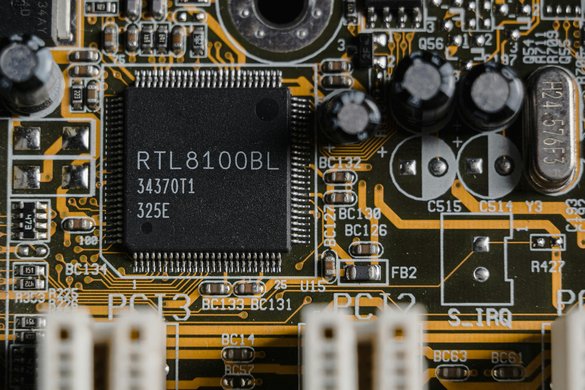

Branches in Engineering
- Mechanical Engineering
- Civil Engineering
- Electrical and Electronics Engineering
- Computer Engineering
- Electronics and Communication Engineering
- Chemical Engineering
- Aerospace Engineering
- Petroleum Engineering
Mechanical Engineering
Mechanical engineering is the branch of engineering that involves the design, construction, and use of mechanical systems. Mechanical engineers apply mathematics and engineering principles to design and build machines, including vehicles, tools, and structures. Mechanical engineers use their knowledge of physics,chemistry, biology, and materials science to solve problems and develop new technologies.
Civil Engineering
Civil engineers design, build, and maintain the foundation for our modern society – our buildings, roads and bridges, drinking water and energy systems, sea ports and airports, and the infrastructure for a cleaner environment, to name just a few.

Electrical and Electronics Engineering
Focuses on the large-scale production and distribution of electrical power. Electrical engineers design, develop, test, and supervise the manufacture of electrical equipment, such as electric motors, radar, and navigation systems. They also design electrical systems for automobiles and aircraft.

Computer Engineering
Computer engineering is a field that combines electrical engineering and computer science to design and develop hardware and software systems. Computer engineers work on all aspects of computer operating systems, including robotics and software. They typically work in research labs, private sectors, and government agencies.

Electronics and Communication Engineering
Electronics & Communication Engineering deals with the electronic devices, circuits, communication equipments like transmitter, receiver, integrated circuits (IC). It also deals with basic electronics, analog and digital transmission & reception of data, voice and video (Example AM, FM, DTH), microprocessors, satellite communication, microwave engineering, antennae and wave progression. It aims to deepen the knowledge and skills of the students on the basic concepts and theories that will equip them in their professional work involving analysis, systems implementation, operation, production, and maintenance of the various applications in the field of Electronics and Communications Engineering.
Chemical Engineering
Chemical engineering is a discipline influencing numerous areas of technology. In broad terms, chemical engineers conceive and design processes to produce, transform, and transport materials — beginning with experimentation in the laboratory followed by the implementation of the technology in full-scale production.
Aerospace Engineering
Aerospace engineering is the primary field of engineering concerned with the design, development, testing, and production of aircraft, spacecraft, and related systems and equipment.
Petroleum Engineering
Petroleum engineering is a field of engineering that focuses on the production of hydrocarbons, such as crude oil and natural gas. Petroleum engineers work with geoscientists and other specialists to explore for oil and gas deposits, and then determine how to extract them.